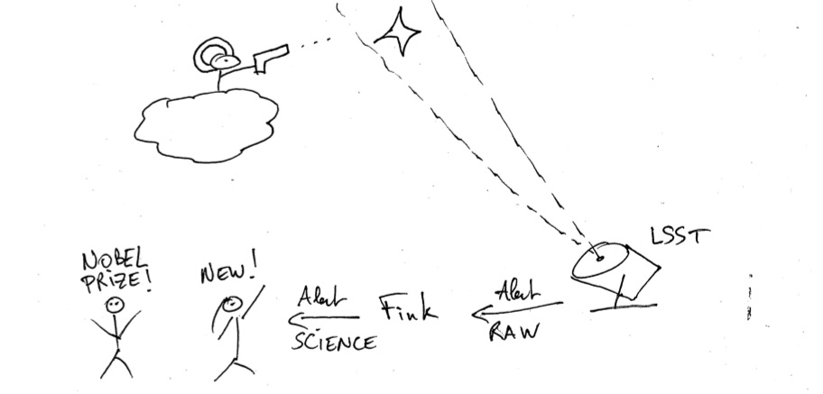

2. Connect to Fink alert streams¶
This second tutorial details how to connect to Fink streams, receive alerts, store them and explore them. It is recommended to play this tutorial from a Python script (Jupyter notebook, or an interactive Python session will work as well but streaming makes things quickly messy!).

2.1. Streaming at the era of big data¶
There are various ways of sending and receiving alerts. Usually, the astronomy community would use VOEvents and the VOEvent Transport Protocol to communicate. While these are widely spread in our communities, they are not really scalable for LSST (or even ZTF) stream size: 10 million alerts per night, or ~1TB/night. Hence LSST (and ZTF) decided instead to use Apache Avro to serialise the data (instead of VOEvent) and Apache Kafka for the transport (instead of VTP). Avro and Kafka are widely spread in the big data community, and they are used in contexts where millions of messages need to be sent and received, with thousands of subscribers and low latencies. Perfect for us!
Note that in Fink, we go even beyond by interfacing Apache Kafka (distributed streaming) with Apache Spark (distributed computation), and we deploy Fink in the cloud to get a fully distributed and scalable end-to-end treatment of the alerts. This is the first to-date in time-domain astronomy, and it was featured in the Spark Summit 2019 (2000+ participants)! But do not be scared, this is completely hidden from a downstream user perspective.
2.2. What is a filter, a topic?¶
Each night, telescopes are sending raw alerts and the broker enriches these alerts by adding new information (e.g. close-by galaxies, stars known from catalogues, or classification scores) to identify interesting candidates for follow-up observations or further scientific processing. The raw stream volume is huge, and each user might want to focus only on a subset of the stream (e.g. only transients that have a high probability to be a supernova). Hence the output of the broker contains filters that flag only particular parts of the stream to be distributed.
Each stream subset from a particular filter is identified by a topic (act as an ID). This stream can be accessed by querying Fink using its topic name, and several users can poll the data from the same topic. Note that filters reduce the number of events in the stream, however each of these events have their complete information (i.e. you will receive the full information of alerts distributed).
In this tutorial, we will connect to an existing Fink outgoing stream, and in the next tutorial you will see how to build your own filter.
2.3. Connecting to Fink streams using fink_client¶
Anyone can connect to Fink outgoing stream using fink_client. It should be installed following the procedure explained in the index page.
2.3.1. Credentials and configuration¶
Anyone can connect to Fink stream, but we want to know who is connecting and how many simultaneous connections we have. This is mainly to size our cluster and network infrastructure. We typically have a (shared) 10 Gbps connection available, which allows us to deliver to simultaneously a hundred of users with small size streams.
Hence users interested to use Fink streams must contact Anais, Emille or Julien and specify:
- Quickly the reasons for using Fink (no need for pages!)
- Your username
- The topic(s) you want to subscribe to.
All connection parameters will be given during the workshop. Once you have added, edit the fink_client/fink_client_conf.py with your username, password (given) and group ID (given):
# template in fink_client/fink_client_conf.py
username = "mygreatusername"
password = "myimpossibletoremindpassword"
group_id = "agroup"
And declare the topics you are interested in:
# List of topic names you subscribed to
mytopics = ["mysupertopic"]
For this tutorial, you have been added to the Kafka cluster, and all fields will be given. Then you need to specify the connection to the cluster:
# Servers from which data will be pulled
servers = "IP:PORT,"
and the full path to the schemas:
# Incoming alert schema to decode the data. You need to specify full path.
# If empty, the client will attempt to download the online latest version.
schema = "/path/to/fink-client/schemas/distribution_schema_0p2.avsc"
Finally, a gentle reminder… ;-)
WARNING: do not share these information publicly!
With our configuration, we are now ready to listen Fink streams! There are mainly two ways: either you use the API or the CLI.
2.3.2. Connect to Fink stream (API)¶
Let’s open a python script (or a jupyter notebook) called poll_single_alert.py and instantiate a consumer:
from fink_client.consumer import AlertConsumer
import fink_client.fink_client_conf as fcc
myconfig = {
"username": fcc.username,
'bootstrap.servers': fcc.servers,
'group_id': fcc.group_id}
if fcc.password is not None:
myconfig['password'] = fcc.password
# Instantiate a consumer
consumer = AlertConsumer(fcc.mytopics, myconfig, schema=fcc.schema)
This consumer has opened a connection between you and Fink. Let’s try to poll an alert:
topic, alert = consumer.poll(fcc.maxtimeout)
if topic is not None:
print("-" * 65)
row = [
alert['timestamp'], topic, alert['objectId'],
alert['cdsxmatch'], alert['rfscore']
]
print("{:<25}|{:<10}|{:<15}|{:<10}|{:<5}|".format(*row))
else:
print('No alerts received in the last {} seconds'.format(fcc.maxtimeout))
Make sure you close the connection:
consumer.close()
Execute this script (python poll_single_alert.py) until you get your first alert!
No alerts the last 10 seconds
...
-----------------------------------------------------------------
2020-01-07 11:01:34.515 |snialike |ZTF19abuhlxk |Unknown |0.593|
If you want to query a new alert rerun this command. Note that in practice, instead of re-running the script, you can use an infinite loop or the consume method in the AlertConsumer class. I encourage you to explore the AlertConsumer API!
Note that each Fink filter starts from the full stream. This means if an alert is flagged by several Fink filters, it will appear simultaneously in different topics and you might get multiple copies of the same data.
Exercise 1: Update the poll_single_alert.py to automatically plot the cutouts and lightcurve contained in coming alerts (hint: go back to the first tutorial).
Exercise 2: The poll_single_alert.py script consumes incoming alerts, but alerts are are not saved (hence they are lost). Modify the script to save incoming alerts on disk to process them later (hint: look at fink_client.avroUtils.poll_and_write).
Exercise 3: The topic snialike redirects alerts that are candidates for supernovae, but the associated Fink filter is rather permissive. Upon receival, you could also flag alerts based on other properties. Modify poll_single_alert.py to reject alerts that are too close to known Solar System Objects.
Note: You will find all solutions to the previous exercises under solutions/ in the tutorial repository.
2.3.3. Connect to Fink stream (CLI)¶
fink_client exposes the program bin/fink_consumer that listen forever to Fink streams (a version of poll_single_alert.py with infinite loop):
fink_consumer -h
usage: fink_consumer [-h] [-config CONFIG] [--display] [--save]
[-outdir OUTDIR]
Kafka consumer to listen and archive Fink streams
optional arguments:
-h, --help show this help message and exit
-config CONFIG Path to your Fink configuration file.
--display If specified, print on screen information about incoming
alert.
--save If specified, save alert data on disk (Avro). See also
-outdir.
-outdir OUTDIR Folder to store incoming alerts if --save is set. It must
exist.
For example, to listen and store each incoming alert, you would use:
# tmpdir/ must exist
fink_consumer \
-config fink_client/fink_client_conf.py \
--display \
--save \
-outdir tmpdir/